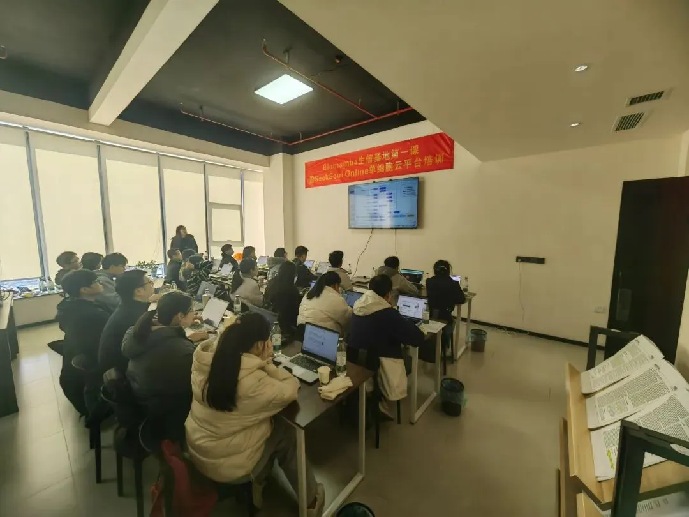
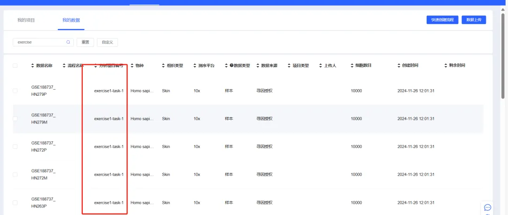
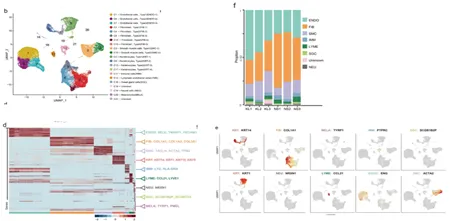
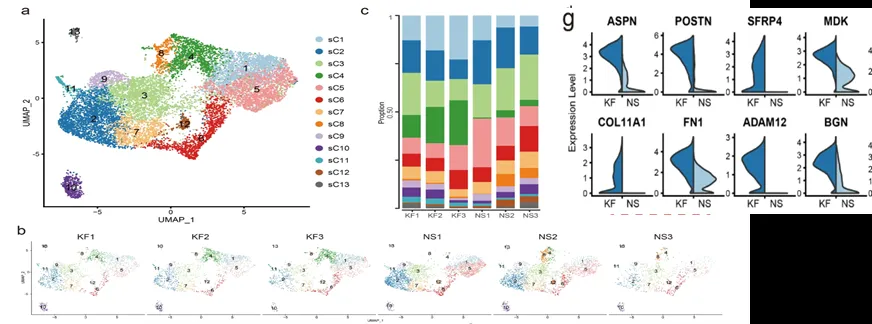
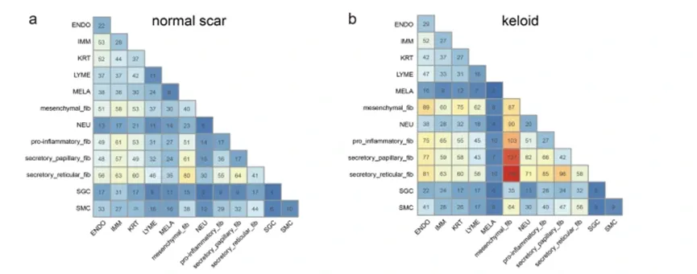

1.5天，你学会单细胞分析了吗？
原文：https://mp.weixin.qq.com/s?__biz=MzAwMzIzOTk5OQ==&mid=2247523411&idx=2&sn=142574b00dd351fae0b76831cd2d2f19&chksm=9b3ce503ac4b6c15d5548fbf8ec483d14bb0e63cb3cff9d4d4acd9b81d93bc8c0c99f65692ae#rd 合集：单细胞云平台 / 生信基地
SeekSoul 单细胞分析特训班
生信基地刚落地(想了很久的生信基地)，我们就邀请到了北京寻因生物给大家带来SeekSoul 单细胞转录组分析特训班的内容。没错，就是我们此前共同开发的[SeekSoul® Online单细胞云平台，注册链接：https://seeksoul.online/t_static/Biomamba/Biomamba.html]。对于繁忙的生物医药工作者来说，纷繁的编程技巧一直是单细胞转录组分析学习中的拦路虎，但是！学会利用云平台可以零代码 完成单细胞数据分析。经过一天半的集训，相信大家都拥有了很大的收获！

课后合影

上课ing
课后作业
规则：截至2024年12月31日前，通过云平台完成作业（三个作业任选一个）
要求：
1. 尽可能得复现出原图形式，某些图片云平台实现不了可以用其他形式图片展示相同或类似得生物学趋势和意义；
2. 整理完成作业得云平台操作流程说明、操作流程截图和结果图（复现手册），提交作业给客服微信Biomamba_yunying ，批改合格后退还课前押金；
3. 如果作业完成得分为优秀可获取云平台上传6个样本，使用3个月得权限(价值3600￥)，优秀结果在群内公示。
大家在【我的数据】有exercise1-task-1、exercise2-task-1、exercise3-task-1对应三个作业的数据：

** **
作业1：
文章标题：Single cell analysis in head and neck cancer reveals potential immune evasion mechanisms during early metastasis
文章中文标题：对头颈部癌症的单细胞分析揭示了早期转移过程中潜在的免疫逃逸机制。
文章链接：https://www.nature.com/articles/s41467-023-37379-y
发表期刊：Nature Communications
样本名称：
(1)如下图的文章展示 进行大群注释、组间umap图、各细胞类型marker基因小提琴图展示、细胞类型占比分布

(2)对肿瘤细胞（就是上皮细胞，拷贝数变异已确定）完成细胞亚群分析（图a），
对个样本上皮细胞EMT基因集打分（图b）；对HN251、HN279样本的肿瘤细胞进行组间拟时序分析（图c、d）

作业2：
文章标题：Single-cell RNA-seq reveals fibroblast heterogeneity and increased mesenchymal fibroblasts in human fibrotic skin diseases
文章中文标题：单细胞 RNA-seq 揭示了人纤维化皮肤病中的成纤维细胞异质性和间充质成纤维细胞增加
文章链接：https://www.nature.com/articles/s41467-021-24110-y
发表期刊：Nature Communications
① 如下图的展示 进行大群聚类注释（图b）、各细胞类型占比分布（图f）、各细胞类型高表达基因热图（图d）各细胞类型marker基因的featureplot图（图e）

② 对成纤维细胞亚群进行重新聚类（图a）、每个样本的细胞亚型的数量占比（图c）、展示每个样本的umap降维图（图b）、做下列图中基因的小提琴图（图g）（小提琴可分开展示）

③ 高级分析 细胞通讯 展示不同分组的各细胞类型的细胞通讯数量热图；

作业3：
文章标题：Temporal Analyses of Postnatal Liver Development and Maturation by Single Cell Transcriptomics
文章中文标题：单细胞转录组学对出生后肝脏发育和成熟的时间分析
文章链接：https://pmc.ncbi.nlm.nih.gov/articles/PMC8842999/
发表期刊：Developmental Cell
① 如下图的展示 进行大群聚类注释（图A）、各细胞类型marker基因气泡图（图b）按照样本分组展示umap降维图（图c），展示组间的tsne图（图d）、以小提琴图展示各样本三个基因表达，代替山脊图

② 对肝细胞进行亚群分析，展示各样本的umap降维图、和scd2基因的featureplot图

③ 对不同发育的肝细胞进行拟时序分析，得到如下图类似结果


如何联系我们

 公众号后台消息回复不便，这里给大家留一下领取资料及免费服务器(足够支持你完成硕博生涯的生信环境)的微信号 ，方便各位随时交流、提建议（别问在么，添加时直接说来意）。此外呼声一直很高的交流群 也建好了，欢迎大家入群讨论：
公众号后台消息回复不便，这里给大家留一下领取资料及免费服务器(足够支持你完成硕博生涯的生信环境)的微信号 ，方便各位随时交流、提建议（别问在么，添加时直接说来意）。此外呼声一直很高的交流群 也建好了，欢迎大家入群讨论：
大家可以阅读完这几篇之后添加给生信入门初学者的小贴士 如何搜索公众号过往发布内容

 您点的每个赞和在看，我都认真当成了喜欢
您点的每个赞和在看，我都认真当成了喜欢